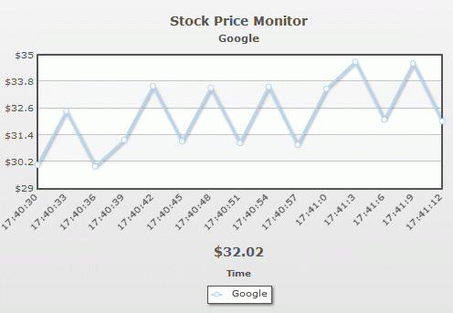

| Creating a simple example |
Here, we'll build a simple live stock monitor using the real-time line chart to monitor the price of a stock (say Google). To create any real-time chart, you'll need to assimilate the following things:
For this example, we've created a folder named RealTime. The samples discussed here is present in Download Package > Code > RealTime folder. |
| How the chart will look? |
| Before we actually get to the code, let's quickly look at how the chart will look like. Shown below is the chart when initialized (i.e., real time data has not been fetched even once): |
| After a few incremental updates, the chart will look as under: |
|  |
As you can see above, here we're monitoring the stock price of Google in a real-time line chart. We've:
|
| Data for the chart |
| The following XML/JSON drives this chart: |
<chart caption="Stock Price Monitor" subCaption="Google" dataStreamURL="StockPrice.asp" refreshInterval="3" numberPrefix="$" setAdaptiveYMin="1" xAxisName="Time" showRealTimeValue="1" labelDisplay="Rotate" slantLabels="1"> {
|
Here, we've first:
When providing dataStreamURL path in XML/JSON, you need to make sure that:
|
| Sample data provider page |
In this example, we've defined our data provider page as StockPrice.asp. Instead of ASP, you can use any technology like PHP, ASP.NET, JSP, ColdFusion etc. to provide the real-time data. All you need to make sure is:
For our demo, we generate random numbers between 30 and 35 and output them to the chart. The following ASP code does it: |
<%@ Language=VBScript %>
<%
'This page is meant to output the Stock Price of Google in real-time data format.
'The data will be picked by FusionWidgets real-time line chart and plotted on chart.
'You need to make sure that the output data doesn't contain any HTML tags or carriage returns.
'For the sake of demo, we'll just be generating a random value between 30 and 35 and returning the same.
'In real life applications, you can get the data from web-service or your own data systems, convert it into real-time data format and then return to the chart.
'Set randomize timers on
Randomize()
Randomize Timer
Dim lowerLimit, upperLimit
Dim randomValue
Dim dateTimeLabel
lowerLimit = 30
upperLimit = 35
'Generate a random value - and round it to 2 decimal places
randomValue = Int(Rnd()*100*(upperLimit-lowerLimit))/100+lowerLimit
'Get label for the data - time in format hh:mn:ss
dateTimeLabel = Datepart("h",Now()) & ":" & Datepart("n",Now()) & ":" & Datepart("s",Now())
'Now write it to output stream
Response.Write("&label="& dateTimeLabel & "&value=" & randomValue)
%>
|
The above code is pretty self explanatory. Here, we're:
A sample output from this code is given below: |
&label=18:36:27&value=32.9 |
| PHP Version of data provider page |
| The ASP code can be replaced by the following PHP code: |
<?php
/**
* This page is meant to output the Stock Price of Google in real-time data format.
* The data will be picked by FusionWidgets real-time line chart and plotted on chart.
* You need to make sure that the output data doesn't contain any HTML tags or carriage returns.
* For the sake of demo, we'll just be generating a random value between 30 and 35 and returning the same.
*
* In real life applications, you can get the data from web-service or your own data systems, convert it into real-time data format and then return to the chart.
*
*/
//Generate a random value between 30 and 35
$randomValue =rand(30,35);
//Get label for the data - time in format hh:mn:ss
$dateTimeLabel = date('h:i:s');
//Now write it to output stream
print "&label=" . $dateTimeLabel . "&value=" . $randomValue;?> |
| Like ASP, the above code outputs the same data. |
| C# Version of Data provider page |
| The code will look as under in ASP.NET (C#): |
<%@ Page Language="C#" %>
<script runat="server">
void Page_Load(Object sender, EventArgs e)
{
//Define variable
int randomValue;
string dateTimeLabel;
//Define limits
int lowerLimit = 30;
int upperLimit = 35;
//Random object
System.Random rand;
rand = new System.Random();
//Generate a random value
randomValue = (int)rand.Next(lowerLimit, upperLimit);
//Get date object
DateTime objToday = DateTime.Now;
//Create time string in hh:mm:ss format
dateTimeLabel = objToday.Hour + ":" + objToday.Minute + ":" + objToday.Second;
//Now write it to output stream
Response.Write("&label=" + dateTimeLabel + "&value=" + randomValue);
}
</script> |
| C# version (with code behind) of data provider page |
| With C# (with code behind), the code will look as under: |
StockPrice.aspx
<%@ Page Language="C#" AutoEventWireup="true" CodeFile="StockPrice.aspx.cs" Inherits="_Default" %>
StockPrice.aspx.cs
using System;
using System.Data;
using System.Configuration;
using System.Web;
using System.Web.Security;
using System.Web.UI;
using System.Web.UI.WebControls;
using System.Web.UI.WebControls.WebParts;
using System.Web.UI.HtmlControls;
public partial class _Default : System.Web.UI.Page
{
protected void Page_Load(object sender, EventArgs e)
{
//Define variable
int randomValue;
string dateTimeLabel;
//Define limits
int lowerLimit = 30;
int upperLimit = 35;
//Create random object
System.Random rand;
rand = new System.Random();
//Generate a random value
randomValue = (int)rand.Next(lowerLimit, upperLimit);
//Get date object
DateTime objToday = DateTime.Now;
//Create time string in hh:mm:ss format
dateTimeLabel = objToday.Hour + ":" + objToday.Minute + ":" + objToday.Second;
//Now write it to output stream
Response.Write ("&label=" + dateTimeLabel + "&value=" + randomValue);
}
} |
| VB.NET version of data provider page |
| In ASP.NET (VB.NET), the code will look as under: |
<%@ Page Language="VB" Culture="Auto" UICulture="Auto" %>
<script runat="server">
Protected Sub Page_Load(ByVal sender As Object, ByVal e As System.EventArgs)
' Define variables
Dim dateTimeLabel As String
Dim lowerLimit As Integer, upperLimit As Integer
' Set the limits
lowerLimit = 30
upperLimit = 35
' Generate a random value - and round it to 2 decimal places
Dim randomValue As Integer, randomNum As New Random
randomValue = randomNum.Next(lowerLimit, upperLimit)
' Get the time in hh:mm:ss format
Dim objToday As Date = Now
dateTimeLabel = objToday.Hour.ToString + ":" + objToday.Minute.ToString + ":" + objToday.Second.ToString
' Now write it to output stream
Response.Write("&label=" + dateTimeLabel + "&value=" + randomValue.ToString)
End Sub
</script> |
| VB.NET (with code behind) version of data provider page |
| In VB.NET, the code will look as under with a code-behind page: |
StockPrice.aspx
<%@ Page Language="VB" AutoEventWireup="false" CodeFile="StockPrice.aspx.vb" Inherits="StockPrice" %>
StockPrice.aspx.vb
Partial Class StockPrice
Inherits System.Web.UI.Page
Protected Sub Page_Load(ByVal sender As Object, ByVal e As System.EventArgs) Handles Me.Load
'Define variables
Dim dateTimeLabel As String
Dim lowerLimit As Integer, upperLimit As Integer
'Setting limits
lowerLimit = 30
upperLimit = 35
'Generate a random value - and round it to 2 decimal places
Dim randomValue As Integer, randomNum As New Random
randomValue = randomNum.Next(lowerLimit, upperLimit)
'Generate the x-axis label (time in hh:mm:ss format)
Dim objToday As Date = Now
dateTimeLabel = objToday.Hour.ToString + ":" + objToday.Minute.ToString + ":" + objToday.Second.ToString
'Now write it to output stream
Response.Write("&label=" + dateTimeLabel + "&value=" + randomValue.ToString)
End Sub
End Class |
| JSP version of data provider page |
| In JSP, the code will look as under: |
<%@page language="java"%><%@page import="java.util.Calendar" %><%@page import="java.text.SimpleDateFormat" %><%
/**
* This page is meant to output the Stock Price of Google in real-time data format.
* The data will be picked by FusionWidgets real-time line chart and plotted on chart.
* You need to make sure that the output data doesn't contain any HTML tags or carriage returns.
* For the sake of demo, we'll just be generating a random value between 30 and 35 and returning the same.
* In real life applications, you can get the data from web-service or your own data systems, convert it into real-time data format and then return to the chart.
*/
/**
* Note: In order to get the output without addition of any
* carriage-returns or tab spaces, there should not be spaces or empty lines
* between scriptlet tags or at the end of the page.
**/
int lowerLimit = 30;
int upperLimit = 35;
//Generate a random value - between lower and upper limits
double randomValue = Math.random()*100*(upperLimit-lowerLimit)/100+lowerLimit;
// Next few steps, to round this double to 2 decimal places
long factor = (long)Math.pow(10,2);
// Shift the decimal the correct number of places
// to the right.
randomValue = randomValue * factor;
// Round to the nearest integer.
long tmp = Math.round(randomValue);
// Shift the decimal the correct number of places
// back to the left.
double roundedRandomValue=(double)tmp / factor;
//Get label for the data - time in format HH:mm:ss
Calendar cal = Calendar.getInstance();
SimpleDateFormat sdf = new SimpleDateFormat("HH:mm:ss");
String timeLabel = sdf.format(cal.getTime());
String dataParameters = "&label=" +timeLabel+ "&value=" +roundedRandomValue;
//Now write it to output stream
out.print(dataParameters);
%> |
| Changing chart type |
| This chart can be very easily converted to area/column chart, by just changing the name of SWF file used. Shown below are examples of same data but different chart: |
| Real-time column chart run against the same data. |
| Real-time area chart run against the same data. |